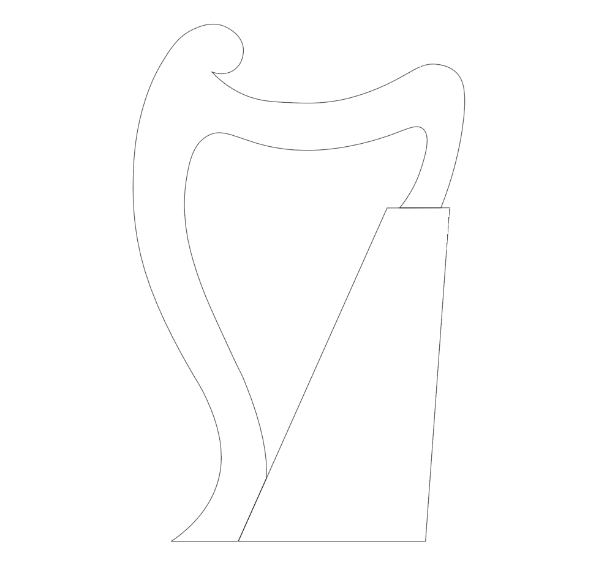
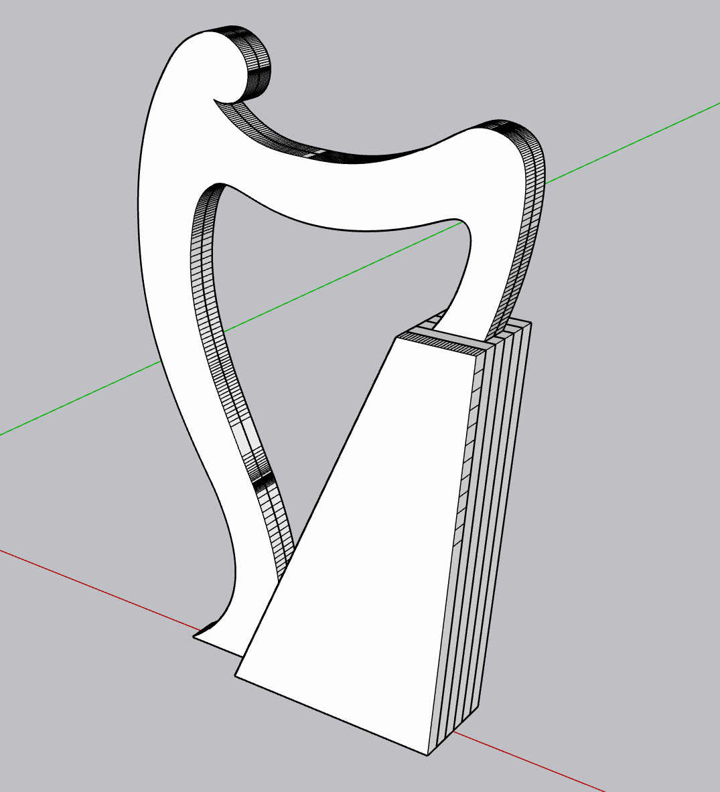
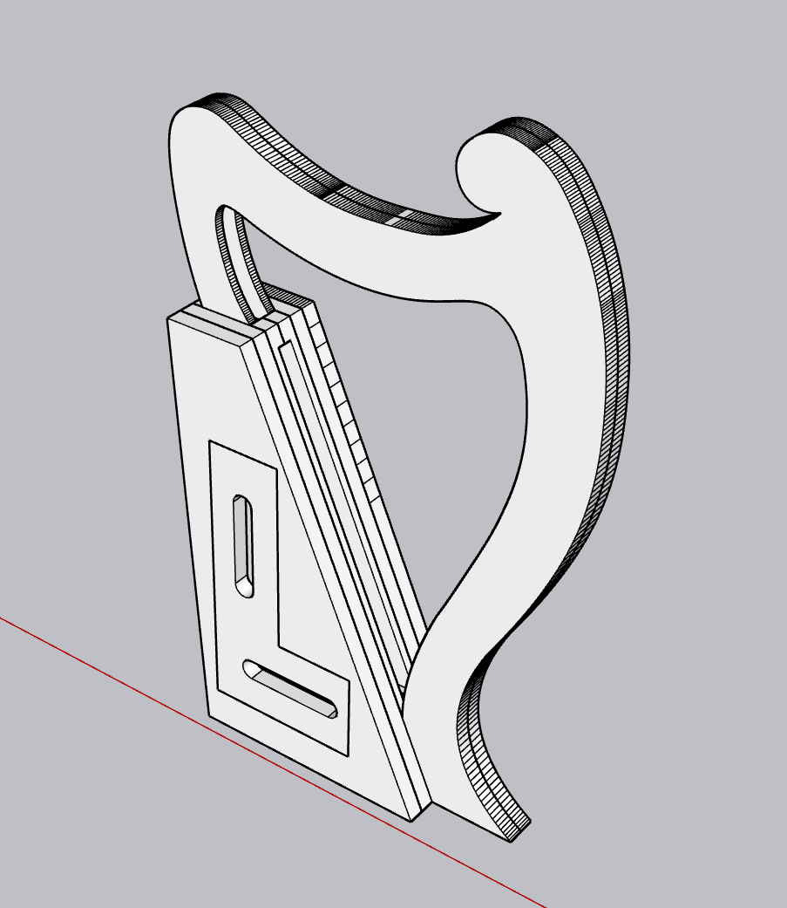
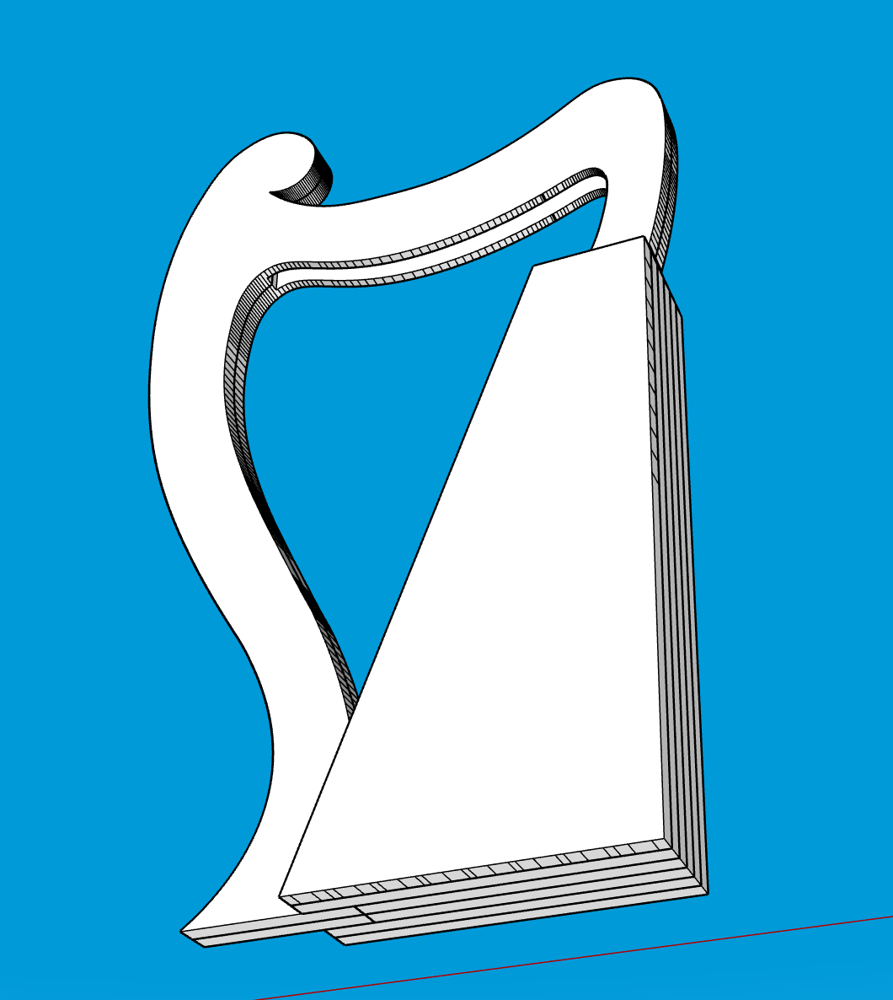
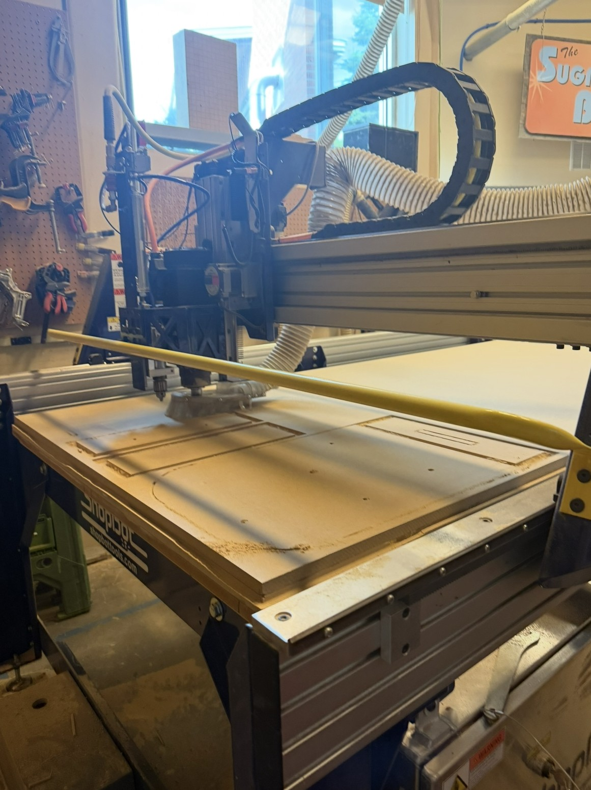
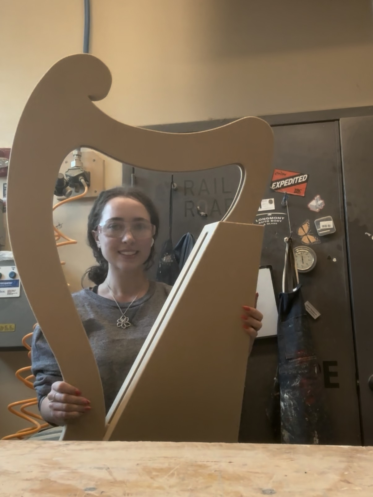
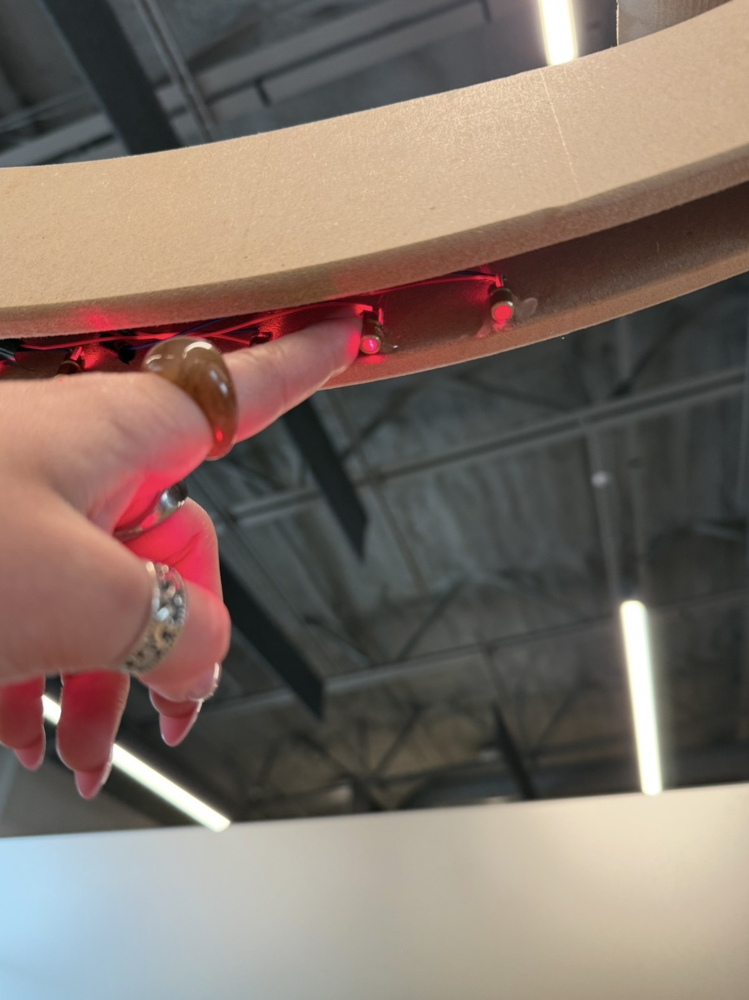
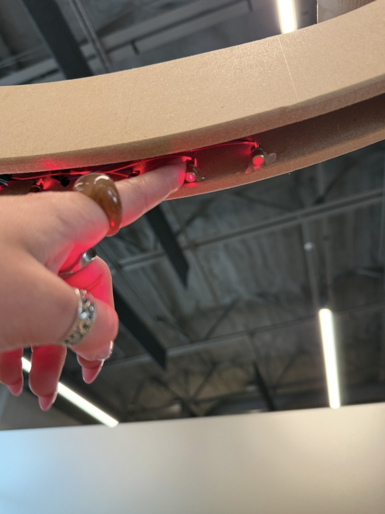
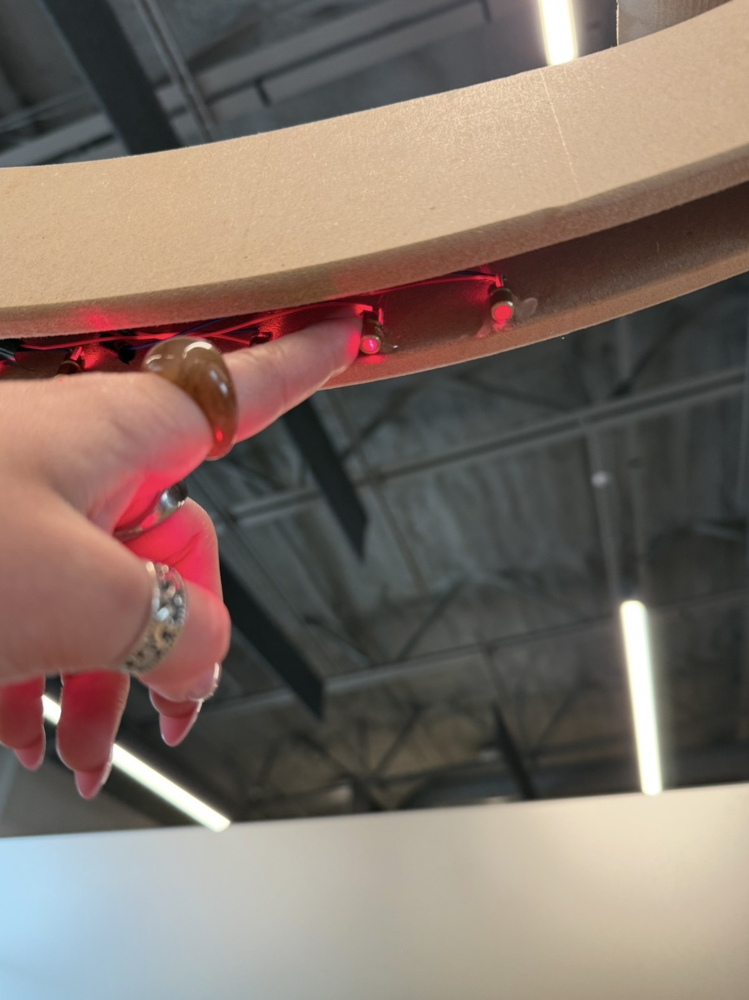

Breakbeam Harp
This year, I spent a semester working alongside the Exhibits team at a local musem. I was responsible for researching, modeling, and developing an interactive for a permanent children's exhibition.
I decided to create a version of the classic Breakbeam Harp: lasers from the top are caught by sensors at the bottom. When these lasers are broken, a note is played, making an electronic recreation of a real harp. I first created an outline of the general shape I wanted in Illustrator and imported it into SketchUp, turning it into a 3D object. I had to create an access pannel with a hollow interior, as well as a hollow top to allow the wires and lasers to hide.






 


I coded two different versions of the harp. For the first, I simply assigned unique note sounds to different strings. The second version aimed to play a more peaceful sound: I took basic note patterns of classic tunes and rigged the lasers so they would play the next note in the series when triggered.